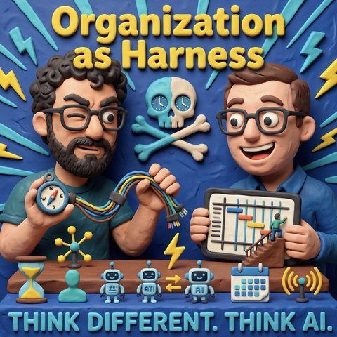

Organisation als Harness
Read in EnglishThemen Führung und ArbeitKI-Agenten
33 Sekunden zur Folge, bevor du liest.
Worum es geht
Wie eine Organisation die Menschen durch die KI-Transformation trägt, statt Rollen eins zu eins zu automatisieren
Jens eröffnet mit der Frage, wie sich Menschen auf dem Weg in die KI-Welt vernünftig begleiten lassen, ohne dass sie abgehängt werden. Mark und er wollen dazu ihre Sicht schildern und freuen sich ausdrücklich über Widerspruch in den Kommentaren. Der Titel der Folge, Organisation als Harness, hat schon im Vorgespräch Fragen aufgeworfen: Für das englische Wort Harness fällt beiden keine gute deutsche Übersetzung ein. Mark ergänzt, dass es nicht nur ums Mitnehmen gehen sollte, sondern auch darum, was eine Organisation den Menschen ermöglicht.
Bevor es ernster wird, räumen die beiden die Social-Media-Schlagworte beiseite: das Bild vom Tesla-Roboter, der vor einem Notebook sitzt und tippt, den „AI Patty Flipper", der nach dem Auftrag nur noch auf Weiter drückt, und den Satz, nicht die KI ersetze dich, sondern der Mensch, der besser mit KI umgeht. Mark erzählt, was ihn überzeugt, dass die Transformation längst läuft: Freitagabend eine fixe Idee, am Sonntagabend steht eine Lösung. Seine Datenbrille konnte ein Display nicht abschalten, jetzt kann sie es, weil er die Firmware mit KI-Hilfe angepasst hat. Jens hält dagegen, dass nicht jeder GitHub, Repositories und Agenten-Steuerung verstehen muss, und dass die Interaktion mit KI für die meisten Menschen noch in einer speziellen Ecke liegt.
Dann geht es um die Organisation. Mark zweifelt an Aussagen wie „Copilot für alle" als KI-Strategie und an Studien, nach denen sich viele produktiver fühlen. Offen bleibt, was mit der gewonnenen Zeit passiert, denn schneller zur Kantine zu gehen schafft keinen Wert. Ein Werkzeug im Software-Stack ändert noch keine Rollen. Systeme, die jahrelang nicht gepflegt wurden, lassen sich jetzt bereinigen, und statt einer zähen Oberfläche bedienen Wissensarbeiter künftig die Schnittstellen dahinter per Chat oder interaktiver Oberfläche. Jens warnt davor, jede Rolle einzeln durch einen Skill zu ersetzen. Er plädiert dafür, Workflows neu zu denken, die Geschäftsmodelle zu klären, implizites Wissen sichtbar zu machen und den leisen Stimmen in der Organisation Gehör zu verschaffen. Ein Beispiel: Wer eine Aufgabe mit Agenten 20-mal schneller erledigt, soll danach nicht zwei Wochen herumsitzen, sondern sich auf Bedürfnisse, Innovation und Kundennähe konzentrieren.
Beide betonen, dass sich der Job ändert, ohne zu verschwinden, und dass eine Organisation dafür ehrlich sein muss. Beteiligung ist ihr Kernbegriff: Wer alles vorgibt, erzeugt Widerstand, und Widerstand kann auch schlicht Zeitmangel sein. Jens plädiert dafür, zu den Teams zu gehen, ihre Workflows zu beobachten, gemeinsam die zeitfressenden Stellen zu finden und schnell Prototypen zu bauen, etwa ein Team Second Brain oder einen MCP-Zugriff auf bisher unerreichbare Datenquellen. Mark ergänzt, dass nicht überall KI hineingehört: Für das tägliche Sortieren von PDFs reicht womöglich ein Python-Skript. Er verweist auf das Worker-Konzept bei Notion, das nach seiner Schilderung KI-erzeugte Skripte laufen lässt und damit Rechenzeit statt Tokens verbraucht. Außerdem lohnt es sich, Aufgaben über Rollen und Jobfamilien hinweg zu bündeln, statt jede Stelle für sich zu betrachten, und strukturierte wie unstrukturierte Firmendaten mit Wissen von außen anzureichern.
Im dritten Teil geht es um Rollen und Grenzen. Jens beschreibt, dass Menschen ständig die Grenzen ihrer Rolle überschreiten, mit KI-Hilfe sogar in Fachgebiete wie Recht hinein, wobei die Entscheidung beim Fachmenschen bleibt. Die Gefahr sei, die KI, die alle Rollen kennt, wieder in künstliche Rollen zu zwängen wie in der Industrialisierung. Das Schlagwort Human in the Loop hält er für überhöht: Den einzelnen Experten, der alles bewertet, gibt es nicht, Intelligenz entsteht durch Zusammenarbeit. Mark rät, nicht auf den lautesten Ruf zu hören, Prozesse von Ende zu Ende zu denken und auch eine neutrale Sicht von außen zu holen. Eine Stellenbeschreibung sei nur ein Teil der Wahrheit, und Wissen gehe verloren, wenn es nie von der Notiz ins Prozessdokument gelangt. Er rechnet damit, dass Unternehmen Wissen wieder stärker in Textformate wie Markdown oder das Open Knowledge Format legen. Jens widerspricht für die Bedienung: Text taugt als Wissensträger, aber Menschen wollen einen Slider oder einen Sprachbefehl. Die Gestaltung der Interaktion mit KI, auch mit Robotik und Sprache, sei eine große Designaufgabe, die bisher fast nur Coder bedienen können.
Zum Schluss fassen sie zusammen: Der Engpass ist weniger das Modell als das Wissen eines Unternehmens und die Art, wie man Menschen befähigt. Jobs verschwinden nicht, aber Zusammenarbeit und Einstiegswege ändern sich. Gewonnene Zeit sollte nicht sofort durch höhere Erwartungen aufgefressen werden, und wer automatisiert, sollte fragen, ob Tokens die effizienteste Lösung sind. Jens rechnet mit kleineren Teams und mehr persönlicher Begegnung, Mark mit dem Gedanken, dass Neues aus menschlicher Interaktion bei der Problemlösung entsteht. Wer anderer Meinung ist oder über das Thema sprechen will, meldet sich über Landingpage, WhatsApp-Kanal oder LinkedIn.
Transkript
00:00:00Willkommen bei Think Different. Think AI., dem Podcast von Mark und Jens.
00:00:07Zwei technologieverliebte Köpfe, die nicht nur über künstliche Intelligenz reden, sondern sie leben.
00:00:14Hier gibt's klare Einordnungen, echte Praxiseinblicke und einen frischen Blick auf das, was möglich ist.
00:00:20Verständlich, kritisch und immer mit einem Augenzwinker.
00:00:24KI zum Nachdenken, zum Schmunzeln und vor allem zum Mitreden.
00:00:33Es ist mal wieder soweit, Mark und ich nehmen eine neue Folge auf und diese Folge dreht sich um das ganze Thema, wie können wir Menschen eigentlich auf dem Weg in diese KI-Welt der Zukunft vernünftig begleiten.
00:00:53Ich glaube, da gibt es mannigfaltig Ansätze, wie man fahren kann, Ideen draußen, die gut oder schlecht sind, das will ich jetzt erstmal noch gar nicht bewerten.
00:01:02Aber Mark und ich wollen in dieser Folge mal ein bisschen drauf schauen, wie unsere beide
00:01:07Meinung dazu ist, wie es vielleicht am besten gelingen kann, und man mag uns hier Lüge
00:01:12strafen, ob das dann auch gut ist oder nicht, oder lasst es auch gerne in den Kommentaren,
00:01:16was unsere Meinung eigentlich dazu ist, wie man in diesem Wandel unterschiedliche
00:01:21Skills, unterschiedliche Menschen in einer Organisation eben auch begleiten kann,
00:01:27so dass sie eben auch nicht abgehangen werden, meiner Meinung nach, von der KI-Transformation,
00:01:31Da geht es heute um drum, in unserer Folge, wir nennen sie Organisation als Hanes.
00:01:39Wir haben im Vorgespräch schon ein bisschen darüber geredet, wie man dieses Wort Hanes
00:01:42eigentlich so richtig gut ins Deutsche übersetzt.
00:01:45Mir fällt noch nichts Gutes ein, ist dir aber irgendwas eingefallen, Mark?
00:01:48Ich wollte, als du die Einladung gemacht hast, sagen, wir wollen aber vielleicht
00:01:52nicht nur frameen, die nehmen wir Menschen mit, sondern vielleicht auch, was ermöglicht
00:01:56es uns, wieso glauben wir, dass es dieses, ich sag mal, dieses Mitnahmeangebot gibt und
00:02:03relevant ist und ich hoffe, egal, ob uns die Geschichte lügen strafen wird, worüber wir
00:02:09jetzt diskutieren oder nicht, ich hoffe schwer, dass es nicht wie in unserer alten Borg-Folge
00:02:15so abläuft, mit Widerstand ist zwecklos oder dass du irgendwann, ich fand letztens
00:02:20das zwei Bilder ganz lustig, bitte lustig in Form von nicht wirklich so ganz ernst gemeint,
00:02:26Wie sieht die Automatisierung des Wissensarbeiters aus?
00:02:28Und hat einer so ein Bild gezeigt, wie ein Tesla-Bot an einem Notebook sitzt und tippt.
00:02:32Fand ich einerseits ganz lustig, so nach dem Motto, der Mensch vor der Maschine wurde
00:02:37ersetzt zwischen eine Maschine vor der Maschine.
00:02:40Und das Zweite war der AI-Paddy-Wender, so nach dem Motto, du drückst bei der KI
00:02:46nach Beauftragung immer nur noch auf weiter, so wie manche Leute am Grill stehen und
00:02:49einfach nur noch den Paddy drehen, ob das in Zukunft und noch ein letztes Punkt.
00:02:55Und dann sind wir, glaube ich, mit den ganzen, ich sage jetzt mal, Social-Media-Floskeln,
00:02:59ja, der Mindproxy, sind wir dann vorbei.
00:03:03Und lass uns das vielleicht ein bisschen ernster uns mit der Frage beschäftigen,
00:03:06wie man halt durch diese KI-Transformation kommt und warum wir auch glauben,
00:03:10dass die KI-Transformation ja eigentlich nicht mehr,
00:03:15sie muss sich in dem Sinne nicht mehr beweisen, sondern wir sind ja gefühlt mittendrin,
00:03:18weil ich weiß ja nicht, wie es dir geht, aber sowas wie Freitagabend,
00:03:22fixe Idee, Maschine angeschmissen, ich sag's so flapsig, paar Bombs reingeworfen und am Sonntagabend
00:03:30hast du irgendwie ein cooles Spiel, eine Lösung, was nachgebaut ist, ein Netflix auf dem Küchengerät,
00:03:36ich hab ja diese komische Brille von Even Realities und hatte das Problem, dass ich dadurch,
00:03:41dass ich von Haus aus schiele, ein Display abschalten wollte, das da drin ist und das hat
00:03:47der Hersteller nicht ermöglicht. Und jetzt kann es es, weil ich es ihm einfach über das Rea-Framework
00:03:53in die Firmware reingeschmissen habe. Als ich in die Firmware reingeschmissen hatte,
00:03:56habe ich einen Parameter gefunden, darauf zuzugreifen. Und du veränderst die Welt.
00:04:00Und da wollen wir nicht wie hier Pippi Langstrumpf, wie sie dir gefällt,
00:04:03sondern einfach die Frage stellen, was heißt denn das, wenn man sich mal aus den eigenen
00:04:08vier Wänden heraus bewegt, zu seinem Arbeitgeber, zu anderen Organisationen,
00:04:14zu Menschen, die sich in Vereinen oder halt in Organisationen so für täglich
00:04:18Tageberg versammeln, sei es ehrenamtlich oder gegen Entgelt. Wie nimmst du denn alle
00:04:23mit, weil auch hier gausche Normalverteilung, die Nerds in der einen
00:04:27Seite, selbst die sehen überhaupt nicht alles, was im Moment so passiert und das
00:04:32wird mein Sprechdurchfall, ich wollte um das Wort Sprechdurchfall heute nochmal
00:04:35bringen, ist der Punkt, wie wir heute mit so einem Kaltstart mal hier
00:04:38reingehen wollen. Genau, ich würde dann nur noch einmal ein weiteres, weil du das
00:04:42Das heißt, so die dicken Social Media Top, Schlagwörter, Slogans, AI-Slobs, was auch
00:04:51immer im Prinzip gerade rumgeht.
00:04:52Ein weiterer Satz, der ja auch dann vielleicht auch nochmal für diese Folge relevant ist,
00:04:56ist ja auch immer dieses Thema, mit dem nicht KI ersetzt dich, sondern der Mensch,
00:05:00der mit KI besser umgehen kann als du.
00:05:02So, irgendwie ungefähr war das, der schon seitdem dieser Chat-CPT-Moment da war,
00:05:07immer wieder die Runde macht.
00:05:08Und ich glaube, auch das ist nochmal ein spannender Satz, den wir beleuchten
00:05:12können und das ist auch der Sinn und Zweck dieser Folge von heute, weil die Beispiele,
00:05:15die du gerade gebracht hast, da haben wir ein paar Mal drüber geredet, auch in den
00:05:18letzten Folgen, wo wir mal über das Thema gibt es noch Softwarehäuser in Zukunft
00:05:22oder nein, baut jeder Mensch eigentlich jegliche Software nach, kann jeder Mensch eigentlich
00:05:28über Reverse Engineer seine VR-Brille so ändern, dass sie dann im Prinzip richtig
00:05:32reagiert.
00:05:33Das steckt ja so ein bisschen drin in diesem Satz, dass wir quasi Menschen,
00:05:39die besonders gut mit KI umgehen können, dann im Prinzip diejenigen sind, die auch alle anderen
00:05:44dann quasi ersetzen werden können. Und ich bin mir da gar nicht so sicher mehr. Ich bin da so ein
00:05:48bisschen, dass ich sage, wir hatten das bei der Einfolge auch, dass es macht ja keinen Sinn,
00:05:52dass wenn du jetzt zum Beispiel eine gute Lösung gefunden hast für Menschen, die eben jedenfalls
00:05:57auch schielen, die dann ein Problem mit dieser Software haben, dass jetzt alle ihre KI benutzen
00:06:01und auf dem gleichen Wissenstand sein müssen, was man da genau tun muss, so wie du das getan
00:06:06Ja, dementsprechend kannst du ja auch jetzt hingehen und sagen, ich habe hier eine Softwarelösung,
00:06:12biete die irgendwo an, biete die vielleicht als offenes Repro an, aber dazu müssten andere
00:06:17Menschen auch schon wieder wissen, was ist denn überhaupt GitHub, was ist eine Repro
00:06:20und wie kann ich meine KI dahin lenken, dass sie runterliegt und ist das dann überhaupt
00:06:23sicher, was ich da tue und solche Sachen.
00:06:25Da sind ja immer wieder viele Fragestellungen, wo ich noch dann glaube, dass KI in diesem
00:06:31wie wir sie gerade auf uns als Menschen zulassen, und das ist häufig Chatfenster,
00:06:35häufig irgendeine Art Terminal oder Softwarelösung, mit denen ich dann
00:06:40Agenten anstoßen kann und die dann was Sinnvolles machen können.
00:06:43Das ist noch nicht das, wo die ganze Menschheit mit umgehen muss, meiner
00:06:49Meinung nach, und uns sollte, weil das ist tatsächlich immer noch so ein
00:06:51bisschen in so einer speziellen Ecke, meiner Meinung nach. Also an der
00:06:55Stelle, ich würde sagen, es ist ja unser kleines privates Projekt, an dem wir hier
00:06:59sitzen. Ich kam auf die Idee, dass wir mal darüber reden, als ich letztendlich diese Meldungen wieder
00:07:03gesehen habe in der sozialen Presse, nämlich TikTok, dass ein großer Automobilkonzern gesagt hat,
00:07:10Co-Pilot für alle und sind demnächst, das ist eine KI-Strategie, also sehr flapsig dargestellt.
00:07:15Und dann stehst du da und denkst, okay, ich hatte doch letztens auch mal so eine Studie gelesen,
00:07:19wo es dann irgendwie darum ging, dass Menschen gefragt wurden, wie sie KI quasi nutzen und
00:07:2477 Prozent sagen, ja, es macht mich produktiver. Davon sagen dann 37, ich habe Zeit gewonnen.
00:07:29Ich frage sich kurz, was haben die anderen gewonnen, wenn sie produktiver geworden sind,
00:07:33wenn sie keine Zeit gewonnen haben. Dann ist die Frage, was hast du mit der Zeit eigentlich
00:07:37gemacht, die du gewonnen hast? Welche Auswirkungen hat denn das? Du wirst ja wahrscheinlich
00:07:40nicht, das ist ja so wie, ich gehe schneller zur Kantine essen. Damit habe ich jetzt
00:07:44ja auch nicht per se eine Produktivität, eine Wertsteigerung, eine Nachhaltigkeit für
00:07:48meine Firma geschaffen. Also was hast du mit dieser Zeit gemacht und sind Organisationen
00:07:52eigentlich auch darauf vorbereitet, weil ich sage mal, wie soll ich mich denn ausdrücken,
00:07:56du hast jetzt ein neues Tool in deinem Software-Stack, egal ob du jetzt eine 5-Mann-Firma, 1.000-Mann-Firma,
00:08:04100.000-Mann-Firma bist, du hast irgendwie Lizenzen für so eine Tour gekauft, du hast
00:08:08Menschen beschult, damit umzugehen, aber nur weil das Werkzeug da ist, haben sich
00:08:12die Rollen, wie du arbeitest, zu was dich das befiegt, ich meine, wir hatten es
00:08:17ja auch in der Vergangenheit, solche Geschichten, jetzt hast du es eben mit Software-Entwicklung,
00:08:22Das greift ja auch in ganz anderen Kategorien um sich, weil Systeme können Sachen automatisieren.
00:08:29Systemen können Qualität machen, Systeme können Datenpflege machen und Systeme, die
00:08:34unter Umständen seit Jahrzehnten nicht anständig gepflegt wurden, hält alles, geht schon,
00:08:42passt schon.
00:08:43Diese Systeme könnten jetzt quasi sauber gemacht werden, Inkonsistenzen können bereinigt
00:08:48werden.
00:08:49vielleicht in ihrer Anwendung, weil es eine sehr merkwürdige UI hat oder so und es immer
00:08:53ewig gedauert hat, dass du da vielleicht ein Case bearbeitest als Wissensarbeiter, als
00:08:58jemand, der für Betreuung oder keine Ahnung Vertragsmanagement zu tun hat.
00:09:03Auf einmal musst du vielleicht nicht eine UI bedienen, die irgendwie, blöd ausgesucht
00:09:08zum Himmel stinkend und langsam ist, sondern du bedienst über einen Chat, über
00:09:11eine interactive UI, über irgendwas die Schnittstellen dahinter, die Datenbanken
00:09:16dahinter.
00:09:17dass diese ganze Lahmheit und Altbackenheit und Systemgrenzen auch Zwischensystemen aufhebt
00:09:25und du dann quasi mit so einer übergreifenden Maske sprichst, mit einem übergreifenden Chat
00:09:30sprichst. Das kann ja nicht komplett planlos an den Rollen vorbeigehen. Und dann stehst du
00:09:36natürlich auf der anderen Seite da und sagst, du trittst vielleicht ein Feld. Ja,
00:09:39wir beide sind jetzt vielleicht ein bisschen sehr technologienerdig, hab ich letztens gelesen,
00:09:44dass wir beide als Technologien-Nerdic seien.
00:09:46Vielleicht ist das der ein oder andere nicht.
00:09:49Vielleicht denkt der eine oder andere, was für ein Spinner.
00:09:52Aber egal, ob man uns für Spinner hält oder für Nerds hält oder sonst was,
00:09:56ich bin der Meinung, dass diese KI-Geschichte auch vor den ganzen anderen Shopprofilen
00:10:01keinen Halt macht.
00:10:03Und dass es auch Teil ist zu fragen,
00:10:06wie kannst du das vermitteln, was da kommt?
00:10:09Wie kannst du Menschen auf die Reise nehmen?
00:10:12Weil, noch so ein anderes Beispiel. Ich komme schon wieder in so ein Räteschwall. Ich liebe das Thema. Was soll ich machen?
00:10:18Ist ja auch so was wie, wenn du jetzt mal klassisch, habe ich so den ein oder anderen Menschen in meinem TikTok-Feed,
00:10:26ja man merkt, der alte Mann ist auf TikTok und zeigt, dass die Jugendlichen das verlassen, weil die Alten Herrschaften sind dort zugegen.
00:10:31Oder eine Midlife-Quizes.
00:10:34Vielleicht kommt das auch noch. Vielleicht machen wir mal lange Haare wachsen und kaufen mir eine Haare.
00:10:39Mal gucken.
00:10:41Aber dann wird meine Frau sofort sagen, mach das bloß nicht, weil du hast ständig Rücken und Arm.
00:10:45Ja, ja, manche Sachen sind aber auch nicht mehr gut.
00:10:49Und da gibt's halt Menschen, die zitieren dann aus irgendwelchen, ich sag jetzt mal keine Ahnung,
00:10:53ja, von Gesetzestexten über Vereinbarungen, über keine Ahnung was, nach dem Motto,
00:10:58ich hab auch im Bekannenkreis Leute, die dann sagen, ja, da kommt dann mein Kollege und möchte quasi geschult werden.
00:11:03Und dann stehst du da und denkst so, ja, natürlich will ich schulen.
00:11:07Und ich bin der Letzte, der jemandem sagt, nein, ich zeig's dir nicht oder sonst was.
00:11:10Aber je nachdem, in welcher Augen du guckst, hast du manchmal mehr eine Sogwirkung im Auge,
00:11:15die nämlich die Wirkung, komm erzähl's mir. Was du mir nicht erzählst, wird dann nicht gemacht.
00:11:19Oh, 16 Uhr, ich gehe. Weißt du, so sinngemäß, ja. Auch da muss man ja gucken, wie kriegst du das
00:11:25denn hin, dass das verständlich ist, dass Akzeptanz da ist, aber dass auch beide Seiten das wollen.
00:11:30Sowohl der Vermittelnde, sage ich jetzt mal, egal ob das Arbeitgeber ist oder Mensch,
00:11:34der irgendwie KI-Know-How als auch der, der unter Umständen, ja ich muss das hier
00:11:39pflegen und mache hier so Benutzerberechtigungen oder keine Ahnung was, ist ja alles wertvolle Arbeit,
00:11:43die aber unter Umständen mehr oder weniger großes Potenzial hat durch den Skill oder so was. Ich
00:11:50sag erst mal optimiert zu werden. Richtig, ich glaube ich würde nur ein bisschen gucken,
00:11:53dass man, ich glaube das ist ja keine neue Frage. Das ist eine Frage, die glaube ich
00:11:58bei jeder technologischen Anschub, den wir hatten immer wieder auf Organisationen und
00:12:03auf unsere Wirtschaft zugekommen ist, dass wir gucken mussten, wie passen wir uns einfach an.
00:12:07Und ich glaube, man sollte jetzt auch bei dieser KI-Transformation nicht den
00:12:13Fehler machen, dass man es wirklich nur als, ich kann jegliche Arbeit, die
00:12:19bisher stattgefunden hat, eins zu eins mit einem Skill ersetzen oder eben
00:12:25produktiver machen. Das wird dieser Transformation, die wir gerade machen,
00:12:29meiner Meinung nach nicht gerecht. Und ich glaube, deshalb ist es das
00:12:32spannende Thema, was wir auch heute haben, mit der Organisation so als
00:12:34Hanes geben, an der ihr eine Robustheit gibt und sie
00:12:39adaptiv macht. Weil ich glaube, eine robuste Organisation, wie ein robuster
00:12:43Organismus, der kann halt auf Umwelt reagieren. Und eine Organisation muss
00:12:47halt auf den Markt reagieren, auf Mitarbeiter, die rein und rausgehen, auf
00:12:53den Wettbewerb, auf den Kunden reagieren und sich da im Prinzip den
00:12:56richtigen Weg finden. Und das ist halt nicht automatisch deterministisch,
00:13:00sondern das ist auch ein Teil, der immer ein bisschen evolutionär auch einfach sein darf und
00:13:06die robuste, der zwar aufgestellt ist, na, der muss natürlich trotzdem, der muss mit KI funktionieren,
00:13:10der muss produktiv sein, weil sonst ist es ein schwächerer Organismus, als die anderen
00:13:13Organismen, die draußen sind, weil da hat er nicht diese Fähigkeiten, die vielleicht andere haben.
00:13:17Pac-Man-Vibes.
00:13:18Ja, ja, und wird dann aufgefressen natürlich, ja, das wollte ich auch gerade sagen,
00:13:21aber was ich mal sagen will, ist, dass wir eben aufpassen, dass wir, wenn wir auf eine
00:13:26Organisation gucken und auf diese Transformation dieser Organisation nicht
00:13:30stupide versuchen zu sagen, ach guck mal, jetzt habe ich hier einen gewissen Skill,
00:13:35einen UI-Designer, einen Engineer, der irgendeinen Laufband konstruiert oder
00:13:41was anderes und das kann ja jetzt alles die KI in dem Moment machen und diese
00:13:45Rollen einzeln quasi nur zu kaifizieren in dem Moment, sondern ich
00:13:50glaube, wir sollten schauen, wie können wir Workflows auch ganz neu denken. Und dieses
00:13:57Neudenken, das ist immer wieder diese menschliche Fähigkeit auch, sich eben zu adaptieren. Da
00:14:05kann dann auf dem Weg eben sich das Thema verschieben, was früher viel Zeit gekostet
00:14:10hat, das kann abgegeben werden an eine KI und das sollte jetzt auch in naher Zukunft
00:14:15Erst mal, wie in so einer Digitalisierung 1.0-Phase, wo man den Brief zu naibel gemacht hat,
00:14:21kann das gerne da quasi automatisiert werden an der einen oder anderen Stelle von der RKI.
00:14:25Damit das aber zu einem Erfolg wird, meiner Meinung nach muss man sich eben intensiv hinsetzen und schauen,
00:14:32was sind die tatsächlichen Bedürfnisse, was sind unsere Geschäftsmodelle, wo verdienen wir etwas,
00:14:35wie kriegen wir implizites Wissen, das wir haben, in einer Organisation nach vorne getragen,
00:14:41wie kriegen wir auch die leisen Stimmen, die in einer Organisation vielleicht sind,
00:14:44die ansonsten im Zahnrad der Gewerke quasi untergehen.
00:14:48Wie kriegen wir die lauter mit ihren guten Ideen,
00:14:50wie vielleicht Lösungen in Zukunft gemacht werden?
00:14:52Und das ist für mich so ein KI-Enablement,
00:14:55das wir im Prinzip auch nutzen können,
00:14:58um die Menschen in Organisationen mitzunehmen
00:15:01und auf neue Rollen reinzuführen.
00:15:04Weil das ist das, wo man, glaube ich,
00:15:06auch immer wieder offen sein muss und ehrlich sein muss,
00:15:09wie bei jeder anderen Transformation auch,
00:15:10dass man sagt, ja,
00:15:12der Job, der vielleicht bisher der Bestandteil war, von dem du gemacht hast,
00:15:16der ändert sich einfach. Das, was du bisher gemacht hast, wo du vielleicht eine
00:15:20Woche oder zwei Wochen gebraucht hast, das kannst du ehrlicherweise teilweise jetzt
00:15:23jetzt lag mal ein Tag sein, dann mit Qualitätskontrolle und ich guck's mir
00:15:27noch mal an oder was anderes. Das heißt, du bist eigentlich 20 mal
00:15:31produktiver. So und das heißt ja nicht jetzt, du sollst die nächsten
00:15:36zwei Wochen rum sitzen, sondern wie können wir im Prinzip dafür sorgen,
00:15:39dass diese Produktivität aber auch nicht nur rausschießt in irgendeine Richtung, sondern
00:15:43weiterhin sauber orchestriert ist, zusammengespielt werden kann mit anderen Kollegen um dich herum,
00:15:48sodass es dann eine insgesamt produktive Organisation wird, wo wir hoffentlich wir
00:15:53Menschen uns dann wieder stärker auf die wesentlichen Teile konzentrieren können,
00:15:57nämlich zu erkennen, was sind die tatsächlichen Bedürfnisse draußen, was wäre jetzt wirklich
00:16:02innovativ, wenn wir da was neu zusammenstricken, neu an den Kunden bringen. Ich glaube,
00:16:06da liegt total viel, auch in so einer positiven Art und Weise diese KI-Transformation anzugehen.
00:16:12Weil ich hatte jetzt vor kurzem auch eine Diskussion mit einer Kollegin aus einer anderen
00:16:16Branche, aus dem UX-Bereich, da hatten wir dann darüber geredet, dass wahrscheinlich
00:16:20der Teil des eigentlichen Designs, das ist das, was ich gerade beschrieben habe, also
00:16:26Bedürfnisse erkennen, Geschäftsmodelle daraus entwickeln, die auch eben an den
00:16:30Markt bringen und verkaufen und im Prinzip den Kunden damit glücklich machen, weil
00:16:34Kaufte die Produkte weiter, dass dieser Part viel wichtiger in Zukunft werden wird als der
00:16:39Part der anderen Produktentwicklung, nämlich nur quasi in Anführungsstrichen, jetzt alle
00:16:44Developer auf der Welt da, dieses Engineering, also der Teil des Codens, weil das wird tatsächlich
00:16:49ein bisschen einfacher in dem Moment werden, ne, ganze Security-Geschichte mal außen
00:16:53vor, die noch drumherum gebaut werden muss, aber wir sind einfach in so einer
00:16:59Phase, wo wir mehr und mehr komplexere Lösungen bauen werden können für die Probleme, die
00:17:07wir haben, die aber dazu führen, dass wir es einfacher machen werden für viele Menschen
00:17:13draußen.
00:17:14Und dafür brauchen wir aber auch menschliche Intelligenz, brauchen die Fachexperten,
00:17:18die wir unternehmen, haben, die sich hoffentlich weniger mit – ich muss eine Exit-Tabelle
00:17:22irgendwo anders reinkopieren – beschäftigen müssen in ihrer Arbeitszeit und viel mehr
00:17:26damit beschäftigen dürfen. Boah, was will denn der Kunde dann eigentlich ganz
00:17:30genau? Und wie können wir das am besten zum Kunden bringen? Und schwupsi-wups kann
00:17:33ich das dann hinterher in jeden Kanal, den ich habe, ob das eine App ist, ob das
00:17:36ein KI-Bot ist, ob das eine Webseite ist, die KI unterstützt ist, die generiert
00:17:39wird in dem Moment, wenn der Kunde sich ankommt. Das ist alles egal, weil
00:17:42das wird einfacher, aber trotzdem ist es wichtig, das da vorzuverstehen.
00:17:46Damit das das richtige Produkt ist, der richtige Service, die richtige
00:17:49Hilfe für den Kunden raus ist. Das ist halt ein bisschen breit aufgestellt,
00:17:54Weil einerseits fängst du an und nicht versuchst, noch mal aktiv wieder weg aus der Geschichte des Software-Entwicklers alleine rauszuziehen,
00:18:00so wie man ein Produkt für einen Kunden herstellt, sondern in Firmen nutzt du Software.
00:18:06Willst du dieses Software weiter nutzen?
00:18:08Welchen Wandel unterliegt dieses Software?
00:18:10Welche Möglichkeiten hast du?
00:18:11Es hilft ja nicht, wenn du eine Tätigkeit aus der, ich nenne es mal bisherigen Welt,
00:18:16mit Agenten, wie auch immer automatisierst, unterstützt.
00:18:19Dann wird die Person unter Umständen super effizient.
00:18:22Aber es bleibt dann trotzdem liegen, weil in der heutigen Prozesskette es später irgendwo anders rumdimpelt.
00:18:28Und das, was du vorhin sagtest, nach dem Motto, dieses implizite Wissen und das Wissen, das zu unterscheiden zwischen,
00:18:35habe ich das Wissen schon digitalisiert oder existiere das Wissen nur in den Köpfen und wie kriege ich die Zusammenhänge raus,
00:18:40dass da ganz viel da drin versteckt ist, was man nicht auf die leichte Schulter nehmen darf.
00:18:46So nach dem Motto, nur weil ich jetzt, ich sag jetzt mal, die ganzen One-Note-Dokumente
00:18:50jetzt in ein Second Brain gegossen habe, habe ich noch nicht das Problem der Welt,
00:18:55oder der Firma, gelöst.
00:18:57Dass man da auch, ich sag jetzt mal, nicht auf der nächsten Versprechung reinfällt.
00:19:00Aber nichtsdestotrotz ist schon, finde ich, die Frage,
00:19:03wie werden sich Organisationen aufstellen,
00:19:06wenn sie sich dieses Prinzipchen, keine Ahnung,
00:19:09Organisation as Code, Organisation as Harness, Organisation keine Ahnung was,
00:19:13wie man sich dann da aufstellt, um diesem Thema, der menschliche Faktor und der digitale Faktor,
00:19:21zusammen an diesen Lösungen arbeiten, nach dem Motto, was ist das, was wir erreichen wollen?
00:19:27Was ist das, was wir dafür brauchen? Was ist das? Wer gibt wem welche Leitplanken?
00:19:32Ich sage jetzt nicht, der Mensch gibt alles an die Maschine ab,
00:19:35aber ich kann mir schon vorstellen, dass es zum Beispiel Jobs gibt oder Rollenprofile gibt,
00:19:40gibt, die heute, wo ein Mensch heute, ich sage jetzt mal, in anderen wütend täglichen
00:19:45Themen verantwortet, wo aber in Zukunft vielleicht ein Agent hingeht und sagt, hast du mal Obacht?
00:19:50Also Agent, das ist immer so wie Skillz, so ein Agent, den welchen Hascher du fragst,
00:19:54ist ein Skill ein Agent, weil er dann irgendwie, keine Ahnung, Hascher ist das immer ein
00:19:59unterschiedliches Wörtchen, das finde ich auch immer lustig. Aber wo halt ein System
00:20:02zum Beispiel sagt, so nach dem Motto, hallo Mark, schön, dass du da. Ich weiß,
00:20:05du bist als Konzernexperte unterwegs, ich habe für dich ein paar Sachen vorbereitet,
00:20:09Das wollen wir uns erst mal anschauen. Versus, wie es heute ist, hallo Mark, was kann ich heute für dich tun? Versus, früher, let me google that for you.
00:20:18Ja, also die Sachen sind ja per se sehr wahrscheinlich einem sehr starken Wandel unterzogen.
00:20:23Von der Seite ist dieses, wie verändert sich die Organisation und wir wiederholen das, ja, gefühlt so ein bisschen mantraartig und ethik immer dasselbe.
00:20:32Es ist halt an so vielen Stellen.
00:20:34Du kannst Dinge automatisieren.
00:20:36Wie bringst du es dazu?
00:20:37Wie bringst du den Menschen dazu, sich zusammen auch mit der Maschine zu verändern,
00:20:42dass der Job, weil der Job ist ja nicht weg, aber der Job ändert sich.
00:20:47Wenn ich mir überlege, ja, ich hatte früher Verantwortung für ein Team
00:20:51und jetzt habe ich das ganze für die Mobilitätentwicklung.
00:20:54Und jetzt habe ich das ganze Thema mit Frontier AI bei mir.
00:20:57Und was mich die KI quasi befegt, das hätte ich vor einem Jahr auch nicht gedacht,
00:21:02als wir unseren Podcast angefangen haben.
00:21:04Ja.
00:21:05Und das heißt ja nicht automatisch, dass ich jetzt die Professur für alles habe, aber
00:21:09allein die Tatsache, dass die Werkzeuge dich zum nächsten Level an Professionalität befähigen,
00:21:17heißt das ja schon, dass die dahinterliegenden Jobprofile durchaus mal angeguckt werden
00:21:21müssten.
00:21:22Okay, welche Jobprofile ändern sich wie stark, wo sind Ziels wichtig, wo sind
00:21:25Actions wichtig, wo ist vielleicht das Jobprofil zukünftig ein AI-Profil und du hast dafür
00:21:31ein, wie auch immer wir es nennen, Profil. Und das ist halt ein Punkt. Das kannst du nicht einfach
00:21:36sagen so nach dem Motto, lass uns den Change machen, weil das wird Widerstand erzeugen.
00:21:42Definitiv. Ohne Belegschaft und Gesellschaft wirst du das nicht machen können. Von der
00:21:48sollte, muss man wahrscheinlich eher einen Raum schaffen zur Gestaltung dieses Changes,
00:21:53damit ein Widerstand, das ist jetzt Unterstellung, Widerstand, aber ich sage,
00:21:58Oder nehme ich Skepsis, entweder ausbleibt oder zumindest mal weniger.
00:22:04Und ich würde den Widerstand jetzt gar nicht so negativ sehen, weil ich glaube, der Widerstand ist noch nicht mal so unbedingt.
00:22:08Das muss ja kein öffentlich formulierter Widerstand sein, sondern das kann auch Widerstand sein, der einfach nur auch dadurch, dass die Zeit es gar nicht erlaubt kommt.
00:22:16Weißt du, wenn ich jetzt mal überlege, ich meine, wir beide haben auch schon über viele, viele Sachen geredet und wir hätten wahrscheinlich auch noch, hätten wir viel, viel mehr Zeit, schon viele Sachen weiter verbessern können.
00:22:23können. Aber manchmal sind wir auch in dem Hamsterrad, unserer täglichen Arbeit, unseres
00:22:26Privatlebens, andere Themen gefangen. Und dadurch gehen manche Dinge dann auch mal noch
00:22:30nicht so schnell oder fallen auch wieder runter. Und von Außenbetracht könnte man
00:22:34das dann wieder...
00:22:35Das ist der Grund, warum ich immer vergesse, den Müll rauszubringen. Das wäre ein guter
00:22:37Grund. Muss ich mir merken.
00:22:38Ja, vielleicht. Genau. Aber das kann von Außenbetracht natürlich auch als Widerstand
00:22:42wahrgenommen werden. Manche haben einfach gar nicht die Muße und die Zeit, sich
00:22:46um alle Themen zu kümmern. Und ich glaube auch nicht zum Beispiel, dass wieder
00:22:50zu diesem Spruch mit dem, ja, die KI, nur wer die KI gut nutzt, blablabla, wird nicht abgeschafft,
00:22:54nee. Es wird auch weiterhin Menschen geben, die nicht so tief in Cloud Code eingestiegen
00:23:04sein müssen, in GitHub-Repositories eingestiegen sein müssen, wissen, wie sie 20 Agenten
00:23:10orchestrieren, an Anführungsstrichen jetzt, in der jetzigen Welt. Weil ich glaube sehr
00:23:17wohl, dass Menschen in Zukunft eher vielleicht sogar unbewusst 20, 30, 40
00:23:23tausend Agenten orchestrieren werden in ihren Jobprofilen, ohne manchmal noch so
00:23:28richtig zu wissen. Ach, ist das jetzt KI? Habe ich da jetzt eine KN-Agenten
00:23:31gebaut? Das ist ja genauso wie die letzten 20, 30 Jahre der
00:23:35digitalen Entwicklung, die wir hinter uns haben. Wer weiß denn noch, wo in
00:23:38welchem Ort noch irgendwelche Bilder auf seinem iPhone gespeichert werden oder
00:23:40an seinem Android-Telefon. Das ist ja im Prinzip etwas, was dann im
00:23:44Hintergrund passiert. Technologie sollte ja immer auch mehr in den
00:23:49Hintergrund rücken und ich glaube, die Jobprofile von manchen Menschen werden
00:23:53sich auch daran ändern, dass sie vielleicht dann auch die Software, die sie
00:23:56heute mal nutzen, gar nicht mehr so wie gewohnt nutzen, sondern dass dann eben
00:23:59Leute, die momentan wie du vielleicht eben auch neue Softwarelösungen denken,
00:24:04neue Workflows denken, ihnen auch Softwarelösungen zur Verfügung stellen,
00:24:10mit denen sie dann tatsächlich anders agieren können, ihnen ist dann vielleicht gar nicht
00:24:15bewusst, was da alles an KI hintersteckt, aber ihnen wird in der richtigen Entscheidungssituation,
00:24:21wenn ihr menschlicher Verstand benötigt wird und sie wirklich kognitiv dann in dieser
00:24:26Präsenz sind und einfach nicht nur ja, ja, Agent, mach das, mach das und das dann
00:24:30auch sind in diesem Moment, weil die Software so gestaltet ist, dass sie im Prinzip diese
00:24:33Entscheidung wichtig macht, ihnen alle Informationen gibt, keine Ahnung, alle Businesszahlen,
00:24:38brauchen für diese Entscheidung, dann in den richtigen Moment aufbereitet und nicht
00:24:41irgendwie vorher in einem Meeting als Powerpoint zugeschickt worden wird und
00:24:44sie dann vielleicht auf einen Button drücken können, um auch quasi den
00:24:47Befehl zu exekutieren, wie es dann weitergeht, wie eine Kampagne gefahren
00:24:50wird, wie eine neue Produktreihe aufgebaut, irgendwas anderes.
00:24:52Ich glaube, wir kommen in so eine Welt, wo wir eben auch mehr Software, also
00:24:59Software als Träger der Interaktion mischt zwischen Mensch und Maschine,
00:25:03eine Art, die die Schicht, die im Prinzip dann erlaubt mit der
00:25:07Maschinen im Hintergrund zu interagieren, dass wir da mehr unterschiedliche
00:25:12Softwarelösungen für die unterschiedlichen menschlichen Skills, die wir
00:25:17haben, sehen werden. Die dann wieder ganz, ganz viele technische Skills in dem
00:25:21Workflow anlosen werden, die richtigerweise vielleicht dann früher von
00:25:25einem Menschen gemacht worden, die dann einfach von einem Agenten im Hintergrund gemacht werden.
00:25:28Aber es wird sich meiner Meinung nach, wie bei jeder technischen Evolution,
00:25:31die Arbeit wird nicht weniger werden,
00:25:34Ehrlicherweise, sondern es wird sich einfach mehr ergeben und anders gestalten und wir
00:25:39werden produktiver insgesamt als die Gesellschaft werden, weil wir noch viel
00:25:43mehr daran machen werden, als wir heutzutage konnten.
00:25:45Einen Punkt glaube ich ja auch, wird uns die Software tatsächlich, oder ich nenne es jetzt mal die
00:25:49Software, also die KI, helfen, weil während du gerade gesprochen hast nach dem
00:25:55Motto, wir werden nicht wissen, wie QR-Code funktioniert, das glaube ich
00:26:00auch, dass man das nicht wissen muss, weil das merken wir ja jetzt schon, wie
00:26:03Sachen weg abstrahiert werden, wenn man auf die ganzen Sprachteligenten geht. Ich hab gerade letztens
00:26:07wieder einen Podcast gehört, wie gut auch Telefonassistenten, also digitale Telefonassistenten,
00:26:13werden, wie du mit denen sprichst, die die sich anhören. Oder es gab letztens ja auch den Fall,
00:26:18dass sie Studien gemacht haben, wie häufig merkt denn dein Gegenüber das im Teams Call, also
00:26:25Teams Call kann auch ein Zoom Call gewesen sein, da weiß ich nicht, dass da ein KI-Agent quasi
00:26:31drin ist, weil er weder optisch noch verbal so erkannt wurde, dass man wusste, okay, das ist
00:26:39eine Maschine und dass dann die Interaktionshürde, heute Tastatur, Maus, Bildschirme, Touch, Text,
00:26:45Chat, wir kriegen es ja auch ein interaktiver UI mit, ja, die Möglichkeiten, sei es jetzt
00:26:49in den Harnesten, die wir selber bauen, aber sei es auch vielleicht in den Harnesten,
00:26:52die du draußen kriegst, dass dann auf einmal du sagen kannst, bei Claude so Artifacts, so nach
00:26:57dem Motto, ich baue mir jetzt einen Dashboard und habe die Interaktionsflächen und werde
00:27:01auch da schon einen ersten Schritt weg wieder vom reinen Prompting zurückgebracht.
00:27:06Aber bevor wir jetzt hier wieder weiter in dieser Technologie-Nerd-Geschichte reinbringen,
00:27:10ich glaube, die Firmen stehen oft vor anderen Herausforderungen, weil wir haben jetzt alle
00:27:14mitgekriegt, dass so Menschen wie wir davon erzählen.
00:27:17Das habe ich auch gesagt, wir werden als Nerds bezeichnet.
00:27:19Oder manchen nennen einen ein Erfüllter.
00:27:22Woran macht man denn jetzt in einer Organisation wirklich knallhart auch fest?
00:27:25Wird er lohnt dich jetzt KI oder wir machen vielleicht doch was Programmatisches oder wir lassen, wie es ist, ja?
00:27:30Also, wie kommt man denn zum Beispiel an so eine Baseline mit Vorher-Nachher-Messungen?
00:27:33Ich will jetzt überhaupt nicht mit Henry Ford oder sonstigen Sachen da ankommen.
00:27:37Ja, schöne Kurse gehen an Leistungskontrolle und Mitbestimmungsgremien.
00:27:40Sondern einfach an die Frage, wie kommst du denn dorthin, nicht umzugucken?
00:27:45Hallo Jens, machst du einen guten Job und kannst du KI nutzen?
00:27:48Und sind es die 380.000 Tokens wert oder nicht?
00:27:51sondern wie kriegt man sowohl dazu, dass der Mensch, Jens, sich dafür interessiert zeigt,
00:27:56das nutzt, vielleicht auch nicht gleich auf die Finger kriegt, wenn er vielleicht zu viele
00:27:59Tokens durch den AirTag geschickt hat, hm, schön warm hier, hm, mann wohl ein paar tausend.
00:28:04Dass das irgendwie klappt und dass man eine Balance findet für diese Reise vor dem Stil.
00:28:11Ich glaube, es ist immer, ich wiederhole mich, das ist eigentlich nichts anderes
00:28:15als bei allen anderen Transformationen.
00:28:16Es ist immer, es kann immer geschaffen werden.
00:28:17Okay, wir schließen den Parkas, wir nennen ihn.
00:28:19Genau, nein, nein, nein, nein, okay, okay.
00:28:20Transformation.
00:28:22Es hat was mit Beteiligung zu tun.
00:28:24Indem ich einfach nur alles
00:28:26vorgebe, dann
00:28:28erzeugst du natürlich Widerstände.
00:28:30Wenn du genauso wie bei einem
00:28:32Kunden draußen das Bedürfnis
00:28:34wirklich erkennen möchtest und ein gutes Produkt für ihn bauen
00:28:36möchtest, ist es auch bei einer Transformation
00:28:38wichtig zu erkennen, was sind denn die
00:28:40eigentlichen Bedürfnisse?
00:28:42Also man muss hingehen
00:28:44zu den Leuten und beobachten, wie sie
00:28:46ihre Arbeit machen. Weil sie vielleicht eben
00:28:48die Zeit haben momentan sich mit KI Gedanken darüber zu machen, wie sie ihr
00:28:51Arbeit verbessern können. Deshalb muss es im Prinzip auch in
00:28:53diesem transformatorischen Aspekt Menschen geben dürfen, die anderen
00:28:57Menschen dabei helfen, sie zu enablen. Und dann geht es nicht darum zu sagen,
00:29:02hier ist es jetzt nur der bessere Prompt oder sowas, den du machen kannst, sondern
00:29:06tatsächlich aus einer Designerperspektive musst du hingehen
00:29:08und sagen, okay, ich schaue mir eure Workhours an,
00:29:11lasst uns mal zusammen überlegen, an welchen Stellen kosten euch Themen
00:29:16wirklich viel Zeit, was würde euch helfen, wenn wir das machen würden, dann quasi, das
00:29:21kannst du im KI schnell machen, prototypisch dann schnell mal was bauen, was ihnen vielleicht
00:29:24helfen würde, ob das dann nur gegebenenfalls ein Team Second Brain ist, ob das Zugriff ist
00:29:30über einen MCP-Server auf Datenquellen, auf die sie vorher nicht zugreifen konnten
00:29:33oder ob das eine Software-Lösung ist, die ihnen dann hilft, andere Sachen zu machen,
00:29:38das sei mal dahingestellt, aber das ist dann im Prinzip diese Arbeit, die getan
00:29:42Also nicht nur, du hast jetzt mal das neue Modell und mach mal schön was oder
00:29:47ihr hast jetzt im Prinzip eine Cloud Code oder so und jetzt guck mal, du draußen könnt
00:29:52alle Leute da Webseiten mitbauen, jetzt stell dich nicht so an, mach mal deine
00:29:55Arbeit dadurch besser. So, das heißt, das ist nicht der Weg, sondern wirklich
00:29:59schauen, was sind die Themen, die ich als Organisation brauche, die
00:30:05identifizieren, dann auf die Teams zugehen, schauen, wie kann ich diesen
00:30:09Teams einfach helfen und ich würde, wie gesagt, das hatte ich vorhin schon so ein
00:30:11sehr angedeutet, es tut nichts vermeiden, rein in bisherige Rollenmodelle zu denken,
00:30:18sondern diese Welt, in der wir uns jetzt bewegen, geht immer mehr dahin, dass wir eigentlich so ein
00:30:23bisschen von diesen klassischen Rollenmodellen meiner Meinung nach wegkommen sollten und stärker
00:30:27darauf gucken, was brauchen wir denn in einem Geschäft, um etwas zu bauen, uns an den Markt
00:30:35zu bringen. Und da gibt es ja genug Produktentwicklungszyklen, Designprozesse, die
00:30:39die beschrieben worden sind, ob das Design-Thinking ist, ob das Lineage X ist, andere Sachen oder
00:30:43Produktentwicklungsprozesse, die eigentlich ja nicht Rollen beschreiben, da sagt ja
00:30:46nie einer gesagt, für einen Produktentwicklungsprozess brauchst du einen Requirements-Engineer und
00:30:51dann brauchst du einen da und da und dann brauchst du einen Architekten und dann
00:30:53brauchst du einen Developer und dann brauchst du einen UI-Designer und hast ihn nicht
00:30:56gesehen und dann wird häufig nur davon geredet, zu sagen, du musst das verstehen.
00:31:00Du musst verstehen, was ist denn die Marktsituation, was ist die Kundensituation.
00:31:04Daraus musst du in eine Ideation gehen, um eine neue Idee zu haben.
00:31:07Diese Idee musst du umsetzen, jedenfalls als Prototyp, und dann musst du diese Idee vermarkten.
00:31:12Also eher quasi, glaube ich, sollten wir in der Zukunft der Organisation in so eine Produktionsrichtung
00:31:17denken und schauen, dass wir jetzt so Rollen neu erfinden.
00:31:20Jetzt habe ich ein bisschen länger geredet, als ich wollte, weil deine eigentliche Frage
00:31:23war ja nur, wie nehmen wir die Leute mit?
00:31:25Und ich sage, die Leute nimmst du mit, indem du sie beteiligst und genau an ihren
00:31:29Problemen guckst, wie kann ich denn da helfen mit KI.
00:31:31Ich finde, an der Stelle sind mir wieder ein paar Einstiegspunkte eingefallen, auf
00:31:36ich noch ein bisschen was erzählen möchte. Es war eines der Fälle, wer sagt, dass Leute mitnehmen.
00:31:40So eine Sache sollte man sich vielleicht, oder das ist so ein bisschen bindender jetzt halt,
00:31:44wenn man Leute mitnimmt auf dieser Reise, mit der Frage, wo nannte man das Automatisierung heute,
00:31:51würde man das vielleicht auch Automatisierung nennen, dann muss man halt auch ehrlich sein
00:31:54in Form von was heißt das in Summe, weil sonst hat man keinen Rahmen der Ehrlichkeit. Weil
00:31:59wenn ich zu dir sage, guck mal, die KI kann Folgendes, findest du das auch,
00:32:05dann sagt er natürlich klar logisch natürlich also solche kann es geben aber vielleicht nicht
00:32:11nur das zweite ist nur weil jetzt k.i. draufstehen muss unbedingt wahrscheinlich auch nicht überall
00:32:16k.i. rein ja wenn ich irgendwie den case habe dass ich jeden tag ganz viele pdf-dokumente
00:32:21sortieren muss dann brauche ich vielleicht kein llm-system da reicht vielleicht auch ein
00:32:25klassisches titan script da fällt mir ein wie das notion macht notion hat das konzept der
00:32:29worker das heißt bei denen kannst du dir mit hilfe von k.i. python-skripte erzeugen die
00:32:34die dann wieder von KI gestartet werden.
00:32:36Dadurch hast du keinen Tokenverbrauch,
00:32:38sondern einfach nur Rechenzeit.
00:32:40Anstatt dass du quasi immer einen Spiel baust,
00:32:42brauchst du halt einen Worker.
00:32:43Und das andere, was du eben sagtest,
00:32:45da dreht sich das ja dann auch immer und immer
00:32:47und immer wieder die Frage,
00:32:49dass Prozessketten über Rollen hinweg gedacht werden müssten.
00:32:52Und dass das Potenzial,
00:32:54je Jobfamilie aus Ausgaben,
00:32:57manchmal ist das Wort schwer,
00:32:59weil auf Aufgaben wollte ich gleich nochmal rein,
00:33:01und die damit verbundenen Stellen
00:33:03in Summe betrachtet werden müssen, weil wenn ich mir so Stellen anschaue,
00:33:06anschauen würde, könnte ich mir gut vorstellen, dass es durchaus Überschneidungen gibt
00:33:11und das Potenzial von Firmen könnte dann wohl auch sein zu sagen, du pass mal
00:33:14obacht, ich habe hier eine Aufgabe X, in dieser Aufgabe X fällt immer Y an und diese
00:33:18Aufgabe X haben ganz viele,
00:33:20sei es bei den Juristen, sei es bei den Buchaltern, sei es bei dem, dem, dem, dem.
00:33:23Und dann bauen wir es nicht
00:33:25pro Jobfamilie neu, sondern wir aggregieren es hoch und überlegen, okay gut, was
00:33:29Was gibt es für Rollen, was gibt es für Stellen, was gibt es für Aufgaben, welche Aufgaben
00:33:33wiederholen sich, welche Aufgaben sind vielleicht ähnlich in Tools, welche Aufgaben sind vielleicht
00:33:38ähnlich in Prozessbeschreibungen und ich glaube an der Stelle ist es jetzt auch
00:33:44dank KI total spannend, wenn du dir anschaust, KI kommt mit strukturierten und unstrukturierten
00:33:50Daten klar.
00:33:51Du hast in der Firma ganz viel von dem Zeug, sei es, dass du Prozessdokumente hast
00:33:55oder dass du einen Dokumentenordner hast, ja, so ein S-Laufwerk, ein X- oder ein Z-Laufwerk,
00:34:00ein was weiß ich was, ein OneNote, ein Teams, ein Google Workspace, ein irgendwas,
00:34:05und du lässt das Ding mal drauf und machst einen Second Print raus.
00:34:08Und du könntest ja auch genauso gut hingehen und sagen, na ja, auf der anderen Seite,
00:34:12ich habe auch ganz viel Wissen draußen, also nicht, dass ich mein Wissen nach draußen bringe,
00:34:16sondern dass ich mal gucke, was gibt es denn für Jobprofile, was gibt es denn für Portale,
00:34:20was gibt es denn da für Diskussionen auf Reddit,
00:34:23Was gibt es in GitHub vielleicht für Skills?
00:34:26Nicht nach dem Motto nimm, drag and drop, fertig, Automatisierung, check, Wertbeitrag,
00:34:31sondern zu sagen, was gibt es denn da für?
00:34:33Und dann die Experten, die Menschen, die da arbeiten, plus die Werkzeuge,
00:34:38die man unter Umständen schon hat und nicht super, der nächste Berater im Haus,
00:34:43das nächste Tool kommt dazu und das nächste Tool kommt dazu und das nächste Tool kommt dazu.
00:34:48Sondern zu sagen, okay, wir sind jetzt in einer Zeit,
00:34:50wo wir wirklich Toollandschaften haben, wo wir wirklich Fähigkeiten haben,
00:34:54wo wir mit dem Strukturierten und Unstrukturierten, was wir haben,
00:34:58die Chance haben, das anzureichern mit Weltwissen, sei es aus dem Modell
00:35:02oder aus gesagten Quellen, von denen es wahrscheinlich mannigfaltige draußen gibt,
00:35:08um daraus dann etwas abzuleiten, dass man dieses ganze Zeug zu einer gemeinsamen Transformation
00:35:15zwischen Auftragsarbeitgeber, Arbeitnehmer, Gewerkschaften, was auch immer,
00:35:19was man da alles dazu packen kann. Ich denke immer an die Großen, weil ich auch
00:35:22bei einem Großen arbeite, aber das trifft ja auf die Kleinen ganz genauso zu.
00:35:26Genauso und aber trotz alledem, da waren jetzt ein paar Sachen, die ich jetzt auch
00:35:29nochmal wieder spannend fand, weil du sagtest mit dem...
00:35:31Wir machen so Ping-Pong, ne?
00:35:32Jaja, okay, immer so. So ein Sprechdenken ist das ja, was wir
00:35:36praktizieren in diesem Podcast.
00:35:37Ein Sprechdurchfall.
00:35:38Jaja, definitiv. Sprechdenken ist schöner.
00:35:40Ja, weil, als du sagtest, man guckt dann auf so eine Organisation und lässt
00:35:44den, die KI auf eine Organisation los und gegebenenfalls auch eben auch diese
00:35:47Rollen, die meine Organisation hat. Das ist ja auch das Spannende. Also wie funktioniert
00:35:50dann Arbeit heutzutage? Ich gehe ja nicht auf meinen Kollegen zu, weil ich sage, der
00:35:55ist der, keine Ahnung, Architekt oder der ist ein bisschen, nein, ich gehe dann auf
00:36:00den Markt zu, weil ich weiß, mit dem Markt kann ich gewisse Aufgaben sehr, sehr gut
00:36:03lösen. Ich habe mir nicht von...
00:36:05Da habe ich aber gerade mal eine ehrliche Rückfrage. Du gehst also nicht zu dem,
00:36:09der die Rolle inne hat, sondern du kommst zu mir?
00:36:11Ja, teilweise schon. Also du würdest ja im Prinzip, also was ich damit sagen will,
00:36:15Also klar, da haben wir gewisse Rollen und die sollten auch erfüllt sein, auch vor allem
00:36:18in cross-funktialen Teams.
00:36:19Aber es ist ja trotzdem hinterher so, dass nicht jeder ständig sich den CV durchlässt
00:36:24in einer Organisation oder ständig weiß, welche Rolle irgendwas ist, sondern wir arbeiten
00:36:29ja in einer Gemeinschaft als Menschen zusammen und sind super adaptierbar.
00:36:32Da ist ja auch nicht so, dass ich sage, ich lasse jetzt den Löffel fallen, weil
00:36:35ich bin jetzt hier nicht der Jurist, sondern natürlich denke ich mich schon ein
00:36:40bisschen rein in die Themen, auch durch KI-Hilfe.
00:36:43Die eigentliche Entscheidung muss dann natürlich trotzdem hinter der Juristin oder sowas treffen,
00:36:46ja, aber wir verletzen ja ständig Grenzen, meiner Meinung nach, die uns durch Rollen
00:36:53gegeben worden sind.
00:36:54Wir sind einfach nicht für Schubladen gedacht.
00:36:57Mark, du darfst.
00:36:58Ich wollte gerade eben, als du noch über Juristen gesprochen hast, an dieser Stelle
00:37:02möchte ich darauf hinweisen, wenn der werte Kollege hier juristische Fragen hat, geht
00:37:07er natürlich eher zu maximieren.
00:37:08Genau, das mache ich auf jeden Fall mit, ja, natürlich.
00:37:12Krüge gehen raus, wenn ich weiß, wer das ist, man findet in unserer Podcast-Folge da einen sehr schönen Erfolg.
00:37:17Genau, natürlich haben wir Spezialisten für diese Themen und dann ist es sehr, sehr klar, wo du hingehen kannst.
00:37:22Aber häufig ist Arbeit eben nicht nur rein durch deterministisches Spezialwissen abgedeckt,
00:37:27sondern eben dadurch, dass wir aus unterschiedlichen Disziplinen und Perspektiven auf eine Herausforderung schauen und dafür Lösungen produzieren.
00:37:38Und das ist halt bisher durch reine Softwarelösungen so nicht abbildbar gewesen.
00:37:44KI kann da deutlich besser unterstützen, gar keine Frage, weil auch da die Grenzen einfach
00:37:50verschwinden sind.
00:37:51Verschwinden sind bei den Modellen, weil die sind alle Rollen in sich, ehrlicherweise.
00:37:55Aber ich würde jetzt jedem raten, dass wir die KI-Transformation nicht so fahren sollten,
00:38:01dass wir die KI, obwohl sie die ganze Welt versteht, alle Rollen versteht, wieder
00:38:06Künstlichen nur in Rollen zwingen, wie wir das manchmal eben auch in unserer
00:38:10Industrialisierung gemacht haben, wo wir dann sehr stark gesagt haben, dieser
00:38:14Mitarbeiter muss das machen, der darf an dieser Schraube etwas drehen.
00:38:17Genauso bauen wir jetzt unsere weitere Digitalisierung auf. Ich glaube, das ist
00:38:20der falsche Weg. Und ich glaube, was ich da noch sagen wollte und deshalb
00:38:24war es auch wichtig, dass wir vorhin mal dieses Thema angesprochen haben, mit
00:38:26den Menschen mitnehmen, die unterschiedlichen Rollen mitnehmen,
00:38:30genau gucken, wo die Bedürfnisse vielleicht in verschiedenen Teams
00:38:33sitzen. Ich glaube, diese Fähigkeit, wenn mehrere Menschen zusammenkommen und dadurch eine neue
00:38:41Lösung dann entsteht, ob das vielleicht auch manchmal durch Missverständnis ist oder eben
00:38:45durch das Zusammenbringen von mehreren Brains dann in dieser Situation, diese Stärke,
00:38:49die wird wertvoll werden in der KI-Transformation und die wird wertvoll bleiben auch für Unternehmen,
00:38:56dass man das wieder stärker macht. Dass man sagt, okay, wir müssen die Menschen,
00:39:00die wir haben, wir müssen diese ganzen lästigen Arbeiten backstrippen. Und wie ich das vorhin
00:39:07schon beschrieben habe, sie dazu befähigen, eigentlich die richtigen Entscheidungen zu treffen,
00:39:11als der Human in the Loop oder als das Team in the Loop. Gar nicht vielleicht dieser einzelne
00:39:16Mensch, weil ein Einzel-Experten, der dann alles irgendwie bewertet kann, den gibt es ja auch
00:39:19nicht. Also Human in the Loop ist auch so ein bisschen missliegig. Das kommt, glaube ich,
00:39:22auch meiner Meinung nach, wird sehr, sehr viel hochgespielt zur Zeit durch diese ganzen
00:39:25Themen, die wir natürlich von draußen sehen, dass es irgendwelche Start-ups geben soll,
00:39:28wo ein Mensch dann ein Milliardenunternehmen baut oder irgendwas anderes und ein Mensch
00:39:32kann eine Webseite bauen und sowas. So ist ja die Welt nicht. Ein Mensch wird nicht alles
00:39:37erschlagen können, egal wie gut die KI auch im Hintergrund in dem Moment ist. Wir müssen
00:39:41zusammenarbeiten. Intelligenz entsteht durch Zusammenarbeit und nicht durch Abgrenzung.
00:39:44An der Stelle möchte ich auch jemanden aus uns von ersten Podcastfolgen zitieren. Er
00:39:49sprach von Expert in the Loop. Wenn ich dir zuhöre, ist es da wahrscheinlich mehr Ex-perts.
00:39:53Spurts, Organisation, Harnes.
00:39:59Ja, was auch immer.
00:40:00Wir machen das jetzt immer weiter, wo ich gerade meinen Koffer habe.
00:40:03Dann machen wir Harnes, Gil, MCP, Bingo.
00:40:05Engineering.
00:40:06Du hast jetzt eben gesagt, was wir lernen wollen.
00:40:08Ich glaube, wir haben ganz viele Punkte so ein bisschen angeschnitten.
00:40:11Wir sind da auch nicht die Weltmeister drin.
00:40:13Wenn jemand darüber auch mit uns reden möchte,
00:40:15herzlich eingeladen vor uns im Podcast.
00:40:18Was ich gerne noch als vielleicht noch nicht so unbedingt klar geäußert
00:40:22einen Gedankengang empfehlen würde, wäre, hört nicht auf den lautesten, der ruft, denn
00:40:27ich glaube, der lauteste, der ruft, ist nicht automatisch das beste Potenzial, das versteckt
00:40:31ist. Wir hatten es vorhin ja nur, weil du eine Arbeitsgruppe beschleunigst unter Umständen,
00:40:37hast du weder den Prozess optimiert, weil ist Prozesse automatisieren, verpasst das
00:40:43G-Design, das damit möglich ist, sondern man muss immer End-to-End denken, einen
00:40:48gesamthaften Blick drauf haben. Da kann schon sein, dass auch mal eine strategische Analyse
00:40:54von außen vielleicht ganz hilfreich ist, wobei von außen heißt es jetzt nicht automatisch
00:40:57durch dritte, sondern vielleicht auch von neutraleren oder übergreifenderen Stellen
00:41:02im eigenen Berit, dass man quasi das, die Dinge findet, wo das Potenzial, wie gesagt,
00:41:07versteckt ist und nicht unbedingt da, wo jemand ruft. Natürlich, das Schreiben von
00:41:11Texten ist mit der KI super, da machen wir das zuerst. Vielleicht gibt es ja eine
00:41:14ganz andere Stelle, wo KI dann helfen kann. Was man sich auch um klaren sein
00:41:19sollte, ist, aber wahrscheinlich wird auch jeder sagen, das kann man verstehen,
00:41:22eine Stellenbeschreibung ist nur ein Teil der Wahrheit. Also ich weiß nicht,
00:41:25wie es um deine steht, ja, aber das finde ich jetzt in meinem Bekanntenkreis
00:41:28oder auch bei mir guck, da ist in der Stellenbeschreibung durchaus
00:41:31teilweise etwas drin oder gar nicht so in Gänze ableitbar. Für den dritten
00:41:35würde ich jetzt mal dran, was wir tun. Und die Zusammenarbeit, das
00:41:39Zwischenmenschliche, das was du gesagt hast, ich gehe mal zum Markt. Nicht, dass jetzt
00:41:42alle zum Mark kommen. Aber der Unterschied zwischen, was steht in einer Beschreibung
00:41:46und was hat sich irgendwie vielleicht eingedürgert. Vielleicht auch etabliert. Vielleicht auch ein
00:41:52Learning-Prozess, der einfach nur verpasst hat, aus einer Notiz in ein Prozessdokument zu wandern,
00:41:58dass das quasi verloren gegangen ist und dass genau da der Wert liegt. Nämlich Prozesse,
00:42:03wie du auch schon wieder sagtest, ich wiederhole dich jetzt, ja, das ist ein positives Wort,
00:42:07Wurst im Schluss quasi, Prozesse von Ende zu Ende denken und nicht nur in einer einzelnen Rolle,
00:42:12dass man aber trotzdem mal gucken muss, welche Aufgaben wiederhören sich und das dann über die
00:42:16Seite vielleicht kommen sollte. Und perspektivisch würde ich vielleicht auch nochmal, weil du
00:42:21gerade eben mit WordExel und so weiter das Akkord an noch im Mund genommen hast, vermuten,
00:42:25aber das ist so mein Blick in die Glaskugel, dass diese Tools zwar nicht weggehen werden,
00:42:30Aber dass wir viel mehr, wenn Firmen weitergehen mit Second Brain Gedanken, mit Wissensräumen,
00:42:37sei es über Rack oder über Skills oder über welches System auch immer, dass diese Systeme
00:42:42vielleicht schön sind, damit ein Mensch das Gefühl einer Oberfläche hat, aber dass eigentliche
00:42:47Datenhaltung, die Nutzdaten, das Weg von ich habe eine Kopie von der Excel und
00:42:53die Kopie von der Excel und die Kopie von der Excel, dass wir mehr wieder in Richtung
00:42:57textlicher Formate, wie beispielsweise Markdown oder Open-Knowledge-Format oder was auch immer
00:43:03kommen.
00:43:04Und das sind meine, jetzt darfst du noch, bevor ich dann irgendwann noch mal mit Blick
00:43:09auf die Uhr den Abschluss einleite.
00:43:11Ja, gerne.
00:43:12Ja, da muss ich natürlich kurz reagieren, weil der Mark ist ja dann doch…
00:43:16Bezogt, oder?
00:43:17Ja, ja, ja.
00:43:18Der Mark ist ja dann doch noch mehr der Technik-Nerd als ich, ich bin ja eher
00:43:23dann auch der Design-Nerd noch auf der anderen Seite und würde nur nicht sagen,
00:43:26Rückschritt rein auf Textformate ist vielleicht gut als Wissensträger, aber nicht gut als
00:43:33Interaktionsmittel.
00:43:34Weil kein Mensch von uns will sich natürlich irgendwie 34.000 Markdowns dann hinterdurchlesen
00:43:39oder was anderes, sondern ich will dann vielleicht hinterher auch nur einfach einen Slider
00:43:42bedienen oder einen Voice-Befehl geben.
00:43:45Und das ist nochmal vielleicht so ein Aufruf auch an den Design-Part und wie gesagt,
00:43:50Ja, UI-Elemente werden wir sehr, sehr schnell kopieren können und strukturiert auch durch KI generieren können.
00:43:58Aber die Gestaltung der Interaktionsmöglichkeiten, die wir jetzt in Zukunft haben und wir haben heute noch gar nicht über vielleicht auch physische KI,
00:44:08also die durch Robotik, durch Voice-Mikrofone, die irgendwo hängen, die auch noch mal eine weitere Schicht der agentischen Welt ist, geredet.
00:44:16Diese Interaktionsoberfläche, die wir Menschen in Zukunft haben werden,
00:44:22die wird in Zukunft meiner Meinung nach explodieren.
00:44:27Die muss, damit wir weiterhin auch in Firmen eine saubere Gammelenz haben,
00:44:31Klarheit darüber haben, was unser Kunde eigentlich draußen haben will,
00:44:35auch im Privatleben genauso, die muss gestaltet werden.
00:44:38Und da bin ich jetzt mal so, nochmal einen Aufruf an die Gestalter draußen.
00:44:42Lass uns da mal mit anfangen, weil bisher ist die KI-Interaktion, wie wir sie sehen,
00:44:50halt auch noch sehr ausgrenzend, weil sie braucht, wenn man KI wirklich nutzen will,
00:44:55da wird da häufig die Frage, ja, Menschen nutzen ja nur Chat und ganz wenige Teile,
00:44:58das sind immer so die Coder, die dann unterwegs sind, ganz wenige Teile der Menschheit
00:45:01können KI wirklich richtig nutzen, weil die können dann mit Cloud Code arbeiten
00:45:05und mit Codex arbeiten und die wissen, wie ein GitHub anliegt, deshalb nutzen die KI richtig.
00:45:09Quatsch. Wir haben es noch nicht gestaltet, dass eben alle anderen eben auch KI-Rutzen nicht
00:45:15also richtig nutzen können in dem Moment und es nicht nur auf der Coding-Ecke ist. Deshalb
00:45:19gibt es natürlich sehr, sehr viel Text und Terminal-Eingaben gerade noch. Und das ist
00:45:23für mich persönlich und ich bin jetzt irgendwie 25, 30 Jahre in diesem Digitalbereich unterwegs,
00:45:28eine gigantisch geile, geile Aufgabe, diese Interaktion für die verschiedenen Menschen,
00:45:36die wir haben, mit unterschiedlichen Wissenständen, mit unterschiedlichen Zugängen eben so zu gestalten,
00:45:40dass wir eben als Ganzheit produktiver durch KI werden und uns KI da einfach helfen kann und nicht
00:45:46nur ein KI-Tool ist, das nur wenigen Menschen zur Verfügung steht, die sie dann richtig sauber
00:45:50benutzen können. Und das ist glaube ich eine geile Designaufgabe. Ich habe angedroht,
00:45:55dass ich zum Schluss überleite, dass das, was du jetzt gerade gesagt hast, würde ich mal
00:45:59in den Satz passen. Verfassen, Denkpass ist nicht das KI-System, das Modell,
00:46:03sondern das Wissen eines Unternehmens, die Art, wie wir damit umgehen, wie wir Menschen dafür befähigen.
00:46:09Ich würde auch mal festhalten, die Jobs verschwinden nicht, haben wir gesagt,
00:46:13aber es wird sich die Art, wie wir zusammenarbeiten, verändern.
00:46:17Es wird sich auch die Art verändern, wie Einstiegsmöglichkeiten entstehen,
00:46:20weil du viel schneller in einen Punkt kommst, Wirkung zu zeigen.
00:46:25Aber ich glaube auch, dass diese gewonnene Zeit nicht sofort durch höhere Erwartungen
00:46:31aufgefressen werden darf. Nach dem Motto, hast du jetzt KI? Ja, warum dauert das so lang? Ja,
00:46:35früher hat mal einer ein Bild gezeichnet von der UI und dann war sofort der Satz,
00:46:39warum ist denn die App noch nicht fertig? Ja, dass man auf der Stelle, dass man, ich will
00:46:43da auch gar nicht, wie man denkt, okay, der Mark sagt jetzt, wir alle müssen schneller werden
00:46:47oder sowas. Nee, ist ja gar nicht der Fall. Darum sollte man den Leuten mal die Chancen
00:46:51gegen diese gewonnene Zeit, wie gesagt, nicht gleich durch ihre Erwartungen auffressen
00:46:55zu lassen. Und das, wenn ihr automatisiert halt euch schon überlegt, was automatisiert ihr
00:47:00mit KI, an welcher Stelle ist das Draufwerfen von Tokens zwar eine Lösung, aber vielleicht nicht die
00:47:06effizienteste. Und ich glaube, und das ist mein letzter Satz zur heutigen Folge, bevor ich dann
00:47:13wirklich zur Verabschiedung gehe, ich glaube, dass Teams kleiner werden. Also ich glaube, dass
00:47:17vielmehr auch das soziale Miteinander in Teams wichtiger wird, dass die Menschen mehr
00:47:21wieder in persönliche Interaktion gehen. Ich persönlich glaube auch vielmehr, dass da Menschen
00:47:26wie da auch so wirklich Hand in Hand und Auge in Auge trifft, aber das ist meine eigene Meinung.
00:47:29Definitiv. Weil schlicht und untergreifend dieser Moment, von dem du auch sprachst,
00:47:35dieses Intelligenz und Neuigkeit und Innovation entsteht aus den menschlichen Interaktionen bei
00:47:41der Problemlösung, das wird viel stärker geformt, geprägt und das bedeutet halt auch,
00:47:48dass du dann für Themen das in viel kleineren Teams schneiden kannst, weil schlicht und
00:47:52untergreifen. Wo willst du alle unterbringen? Und wenn du, ich sag mal, keine Ahnung, wenn
00:47:56100 Leute in den Raum sperren für ein Meeting, ja, da hilft mir die KI dann auch nicht mehr.
00:48:01Und wenn du jetzt dann nicht noch eine Zuckung im Finger haben solltest, Jens, würde ich sagen,
00:48:09ich werde jetzt den nächsten Schritt der Automatisierung einleiten, nämlich ich werde
00:48:14diese Aufnahme an meinen Skill übergeben, der das Ganze dann in wohliges Audio überführt,
00:48:21zu langen Gedankenpausen entfernt. Um mein Kruschen an der kleinen Rittersporthafel Schokolade überwiedelt,
00:48:28die ich in der Vorbereitung der Sendung schon beschwerf, als dass ihr das Trommelpfel raus stellt,
00:48:31das beseitigt. Und wenn ihr eine andere Meinung habt oder uns in unserer Meinung bestätigen wollt,
00:48:37was wir auch sehr gerne hören oder zu einem anderen Thema sprechen wollt, meldet euch.
00:48:40Wir haben ja unsere Landing-Pages, unser WhatsApp-Kanal, wir sind auf LinkedIn.
00:48:44Sollten wir überlegen, an welchen Social-Media-Kanälen wir ansonsten noch so vertreten sind.
00:48:48und ich würde sagen, alles wird gut. Lasst euch drauf ein und ich bin gespannt,
00:48:54worüber wir das nächste Mal reden. Jens, Mark, freu mich, dass du da warst und wir hören uns
00:49:01wieder. Bis zum nächsten Mal. Tschau. Willkommen bei Think Different. Think AI.,
00:49:08dem Podcast von Mark und Jens. Zwei technologieverliebte Köpfe, die nicht nur über künstliche
00:49:15Intelligenz reden, sondern sie leben. Hier gibt's klare Einordnungen, echte Praxiseinblicke und einen
00:49:22frischen Blick auf das, was möglich ist. Verständlich, kritisch und immer mit einem
00:49:27Augenzwinker. KI zum Nachdenken, zum Schmunzeln und vor allem zum Mitreden.